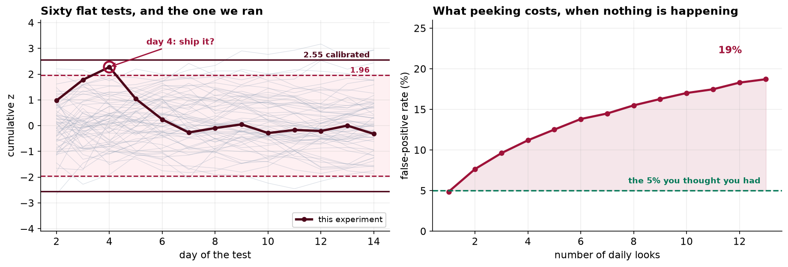
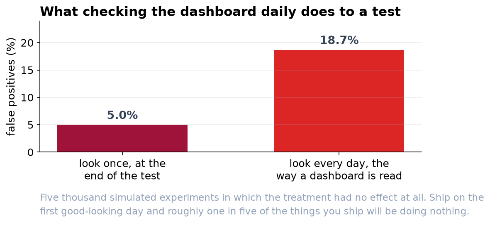

The New Checkout Does Not Pay For Itself
It was ahead by 15 percent on day 4. Fourteen days of traffic put it at minus one, and the finished test rules out the lift that justified the build.
Recommendation
Do not roll out the redesigned checkout. Over the full 14 days it converted at 4.07 percent against the current checkout's 4.11 percent, a difference of essentially nothing. More usefully, the test was precise enough to say what the effect is not: we can rule out the 10 percent lift that the build was costed against. There is no version of this result in which the redesign pays back.
Why the dashboard said something different
On day 4 the redesign was ahead by 15.3 percent with a p-value of 0.023. That was a real number, correctly calculated, and it was noise. Two thirds of the eventual traffic had not yet arrived, and when it did the difference did not shrink toward zero so much as cross it.
This is not a story about anyone doing anything wrong. Nobody fished for a favorable metric or quietly dropped an awkward segment. A team looked at its own dashboard and saw what looked like a clear answer. The problem is structural, and so is the fix.

The number worth remembering
We simulated five thousand experiments in which the treatment had no effect at all, and checked each one daily the way a team watches a dashboard. Almost one in five produced a significant result at some point. If we ship on the first good-looking day, roughly one in five of the things we ship will be doing nothing, and we will have a chart proving otherwise.

What to change, in practice
- Agree the sample size and the end date before the test starts. They follow from one business question: how small a lift would still be worth shipping? For this test the answer was 10 percent, which fixed the test at 14 days. Had we said 3 percent it would have been 149 days, and knowing that in advance is itself useful.
- Keep watching, but set the stopping rule before the test starts. Monitoring is legitimate and we should not give it up. What has to change is how strong a result must look before we act on it. Because we check every day rather than once, that standard has to be tighter: roughly a one-in-a-hundred result, against the one-in-twenty a single end-of-test check would use. The day-4 result cleared the ordinary standard and not the tighter one, so under that rule the test would simply have carried on. The technical report gives the exact threshold.
- Use what we already know about customers. Adjusting for what each visitor spent in the previous 30 days tightened the revenue measurement by 12 percent, which is worth about three days of traffic on every future test at no cost beyond the pipeline.
- Write up the nulls. A test that rules something out is a result. If we only circulate the wins we will end up with a roadmap of changes that all worked and a conversion rate that never moves.
What this test cannot tell you
It measured one metric, conversion, over 14 days, on this audience. It says nothing about whether the redesign is better for customers in ways we did not measure, nothing about effects that take longer than two weeks to appear, and nothing about the customer segments the test was not large enough to measure separately. Revenue per visitor came in slightly higher in the redesign, and it would be a mistake to promote that to a headline: it was not the metric we designed the test around, and going looking for a winner after the fact is how the day-4 result happened in the first place.
If you want the redesign anyway
That is a legitimate position and it should be argued on its own terms. There are good reasons to ship a change that does not move conversion: lower support load, easier maintenance, accessibility, a platform for later work. What the evidence will not support is a business case built on a conversion lift. If the case rests on something else, say so plainly and we can measure that instead.